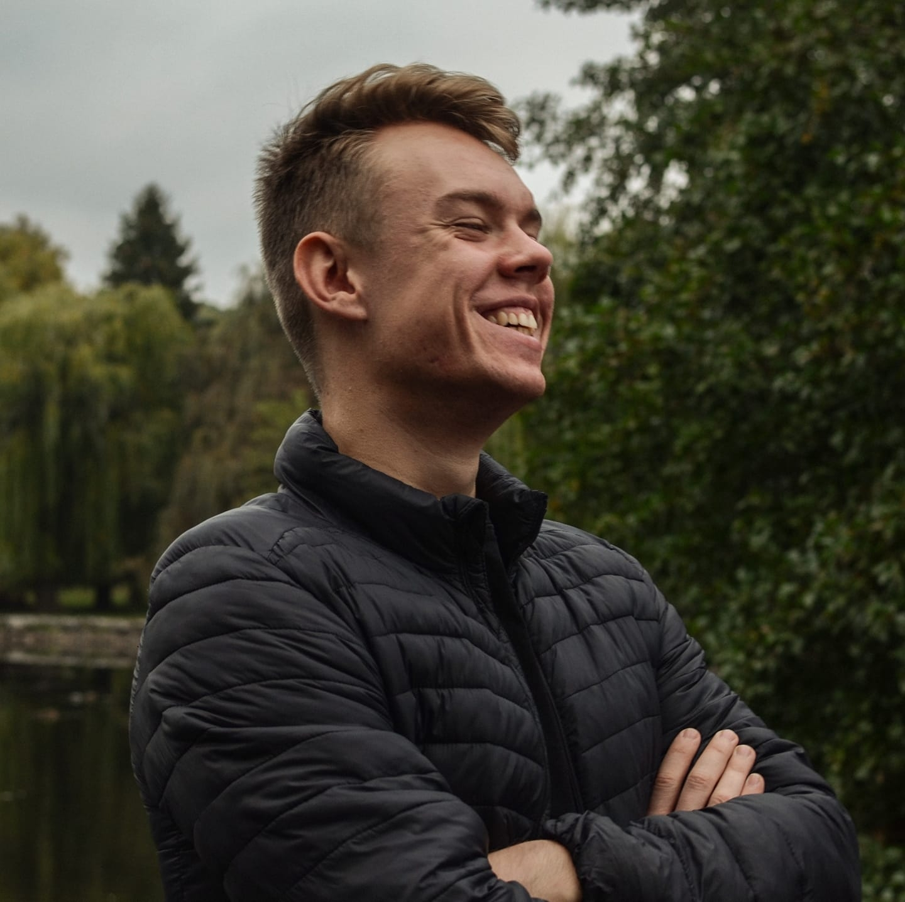

Rólam
Kovács Gábor vagyok, 20 éves és a Budapesti Műszaki és Gazdaságtudományi Egyetem hallgatója. Második félévemet töltöm az egyetemen, a gépész szakon. Egerbe jártam a Neumann János Gimnázium, Technikum és Kollégiumba műszaki képzésre.
A műszaki beállítottságom folytán érdekelnek a gépek, lehetnek azok akár informatikai, mint egy számítógép, de főleg az autók foglalkoztatnak. Szeretek tervezni, újat alkotni és szeretem látni, ha megvalósulnak az ötleteim. Ez párosul azzal, hogy mindig arra törekszem, hogy megértsem a dolgok működését.
Hétről hétre követem a Forma-1-et érdekel ezen belül minden kis része az autónak. Egyik nagy álmom, hogy a kedvenc csapatomnál a RedBull-nál dolgozom mint mérnök.
Kiemelten érdekelnek: az aerodinamika, a felfüggesztés geometriája, kompozit anyagok, mint például a szénszál. A Galériában összeszedtem egy pár érdekes képet ezzel a témával kapcsolatban.